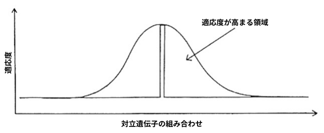
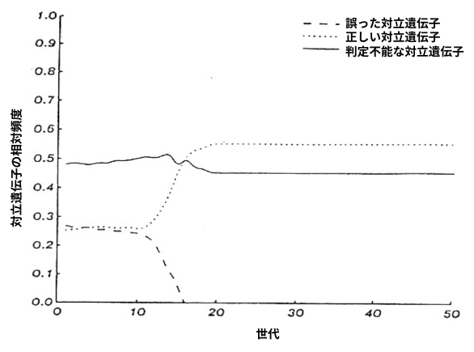

Abstract. The assumption that acquired characteristics are not inherited is often taken to imply that the
adaptations that an organism learns during its lifetime cannot guide the course of evolution. This
inference is incorrect (Baldwin, 1896). Learning alters the shape of the search space in which evolution
operates and thereby provides good evolutionary paths towards sets of co-adapted alleles. We
demonstrate that this effect allows learning organisms to evolve much faster than their nonlearning
equivalents, even though the characteristics acquired by the phenotype are not communicated to the
genotype.
要旨。獲得形質は遺伝しないという前提は、しばしば、生物が個体の一生を通じて学習した適応が進化の過程を導くことはできない、ということを意味すると解釈されがちである。しかし、この推論は誤りである（Baldwin, 1896）。学習は、進化が作用する探索空間の形状を変化させ、それによって、相互に適応した対立遺伝子の組み合わせへと至る良好な進化の経路を提供する。我々は、この効果により、表現型が獲得した形質が遺伝子型に伝達されるわけではないにもかかわらず、学習を行う生物は学習を行わない同種の生物よりもはるかに速く進化できることを実証する。
Many organisms learn useful adaptations during their lifetime. These adaptations are often the result of
an exploratory search which tries out many possibilities in order to discover good solutions. It seems
very wasteful not to make use of the exploration performed by the phenotype to facilitate the
evolutionary search for good genotypes. The obvious way to achieve this is to transfer information about
the acquired characteristics back to the genotype. Most biologists now accept that the Lamarckian
hypothesis is not substantiated; some then infer that learning cannot guide the evolutionary search. We
use a simple combinatorial argument to show that this inference is incorrect and that learning can be
very effective in guiding the search, even when the specific adaptations that are learned are not
communicated to the genotype. In difficult evolutionary searches which require many possibilities to be
tested in order to discover a complex co-adaptation, we demonstrate that each learning trial can be
almost as helpful to the evolutionary search as the production and evaluation of a whole new organism.
This greatly increases the efficiency of evolution because a learning trial is much faster and requires
much less expenditure of energy than the production of a whole organism.
多くの生物は、その生涯を通じて有用な適応を獲得します。こうした適応は多くの場合、優れた解決策を見出すために数多くの可能性を試す「探索的プロセス」の結果として生じます。表現型（個体）が行うこの探索活動を、優れた遺伝子型を求める進化的な探索に役立てないというのは、極めて非効率的と言えるでしょう。これを実現する明白な方法は、獲得された形質に関する情報を遺伝子型へとフィードバックすることです。現在、多くの生物学者はラマルク説が実証されていないことを認めていますが、そこから「学習は進化的な探索を導くことはできない」と結論づける向きもあります。しかし私たちは、単純な組み合わせ論的議論を用いることで、この結論が誤りであることを示します。すなわち、学習によって獲得された具体的な適応形質が遺伝子型に直接伝達されない場合であっても、学習は探索を導く上で極めて有効であり得るのです。複雑な「共適応」を見出すために膨大な数の可能性を検証する必要があるような困難な進化の探索において、個々の学習試行は、全く新しい個体を生成・評価することに匹敵するほど、進化的な探索に貢献し得ることを私たちは実証します。学習試行は、個体全体を生成する場合に比べてはるかに短時間で済み、エネルギー消費も少なくて済むため、このことは進化の効率を劇的に高めることにつながります。
Learning can provide an easy evolutionary path towards co-adapted alleles in environments that have no
good evolutionary path for non-learning organisms. This type of interaction between learning and
evolution was first proposed by Baldwin (1896) and Lloyd Morgan (1896) and is sometimes called the
Baldwin effect. Waddington (1942) proposed a similar type of interaction between developmental
processes and evolution and called it "canalization" or "genetic assimilation." So far as we can tell, there
have been no computer simulations or analyses of the combinatorics that demonstrate the magnitude of
the effect.
学習能力を持たない生物にとっては進化的に有利な経路が存在しないような環境下でも、学習という能力は、相互に適応した対立遺伝子（co-adapted alleles）へと至る容易な進化の道筋を提供し得ます。学習と進化の間に見られるこうした相互作用は、ボールドウィン（1896年）やロイド・モーガン（1896年）によって初めて提唱され、今日では「ボールドウィン効果」と呼ばれることもあります。ワディントン（1942年）は、発生プロセスと進化の間にも同様の相互作用があることを提唱し、これを「運河化（canalization）」あるいは「遺伝的同化（genetic assimilation）」と呼びました。現時点では、この効果の大きさを実証するようなコンピュータ・シミュレーションや、組み合わせ論的な解析は行われていないようです。
Baldwinism is best understood by considering an extreme (and unrealistic) case in which the
combinatorics are very clear. Imagine an organism that contains a neural net in which there are many
potential connections. Suppose that the net only confers added reproductive fitness on the organism if it
is connected in exactly the right way. In this worst case, there is no reasonable evolutionary path toward
the good net and a pure evolutionary search can only discover which of the potential connections should
be present by trying possibilities at random. The good net is like a needle in a haystack.
ボールドウィン主義を理解するには、組み合わせの構造が極めて明確な、ある極端な（かつ非現実的な）事例を考えてみるのが最善です。多数の接続の可能性を秘めたニューラルネットワークを持つ生物を想像してみてください。そのネットワークは、まさに「正しい」方法で接続された場合にのみ、その生物にさらなる繁殖適応度をもたらすと仮定します。このような最悪のケースでは、優れたネットワークに至る妥当な進化の道筋は存在せず、純粋な進化による探索は、ランダムに可能性を試すことによってのみ、どの接続が存在すべきかを見つけ出すことができます。つまり、優れたネットワークを見つけることは、干し草の山から針を探し出すようなものなのです。
The evolutionary search space becomes much better if the genotype specifies some of the decisions
about where to put connections, but leaves other decisions to learning. This has the effect of constructing a large zone of increased fitness around the good net. Whenever the genetically specified decisions are
correct, the genotype falls within this zone and will have increased fitness because learning will stand a
chance of discovering how to make the remaining decisions so as to produce the good net. This makes
the evolutionary search much easier. It is like searching for a needle in a haystack when someone tells
you when you are getting close. The central point of the argument is that the person who tells you that
you are getting close does not need to tell you anything more.
接続をどこに配置するかという決定の一部を遺伝子型が規定し、残りの決定を学習に委ねるようにすると、進化的な探索空間の状況は大幅に改善されます。これには、優れたネットワークの周囲に、適応度が高い領域を大きく形成するという効果があります。遺伝子型による決定が適切であれば、その遺伝子型はこの領域内に位置することになり、適応度が高まります。なぜなら、学習によって残りの決定を適切に行い、その優れたネットワークを構築する方法を見つけ出せる可能性が生まれるからです。その結果、進化的な探索は格段に容易になります。これは、干し草の山から針を探す際に、近づいていることを誰かが教えてくれるような状況に例えられます。この議論の核心は、近づいていることを知らせてくれる相手が、それ以上の情報を教える必要はない、という点にあります。
We have simulated a simple example of this kind of interaction between learning and evolution. The
neural net has 20 potential connections, and the genotype has 20 genes[1], each of which has three
alternative forms (alleles) called 1, 0, and ?. The 1 allele specifies that a connection should be present, 0
specifies that it should be absent, and ? specifies a connection containing a switch which can be open or
closed. It is left to learning to decide how the switches should be set. We assume, for simplicity, a
learning mechanism that simply tries a random combination of switch settings on every trial. If the
combination of the switch settings and the genetically specified decisions ever produce the one good net
we assume that the switch settings are frozen. Otherwise they keep changing.[2]
我々は、学習と進化の間のこうした相互作用について、単純な例を用いたシミュレーションを行った。
そのニューラルネットワークは20個の接続候補を持ち、遺伝子型は20個の遺伝子[1]から構成されている。各遺伝子は、1、0、? という3種類の対立遺伝子（アレル）のいずれかをとる。アレル「1」は接続の存在を、アレル「0」は接続の不在を指定し、アレル「?」は開閉可能なスイッチを備えた接続を指定する。スイッチをどのように設定するかは学習に委ねられる。単純化のため、ここでは各試行においてスイッチ設定のランダムな組み合わせを単に試行するような学習メカニズムを想定する。スイッチ設定と遺伝的に指定された決定との組み合わせによって、ある「正解」のネットワークが形成された場合、そのスイッチ設定は固定されるものとする。そうでない場合、スイッチ設定は変化し続ける[2]。
The evolutionary search is modeled with a version of the genetic algorithm proposed by Holland (1975).
Figure 1 shows how learning alters the shape of the search space in which evolution operates. Figure 2
shows what happens to the relative frequencies of the correct, incorrect, and ? alleles during a typical
evolutionary search in which each organism runs many learning trials during its lifetime. Notice that the
total number of organisms produced is far less than the 220 that would be expected to find the good net
by a pure evolutionary search. One interesting feature of Figure 2 is that there is very little selective
pressure in favor of genetically specifying the last few potential connections, because a few learning
trials is almost always sufficient to learn the correct settings of just a few switches.
進化的な探索は、Holland（1975）が提案した遺伝的アルゴリズムの一種を用いてモデル化されています。図1は、学習によって、進化が作用する探索空間の形状がどのように変化するかを示しています。図2は、個体がその生涯を通じて多数の学習試行を行う典型的な進化探索において、正解、不正解、および「？」の対立遺伝子の相対頻度がどのように推移するかを示しています。ここで注目すべき点は、生成された個体の総数が、純粋な進化探索によって適切なネットワークを見つけるために必要と予想される220個体よりもはるかに少ないということです。図2の興味深い特徴の一つは、最後の数個の潜在的な接続を遺伝的に規定することに対して、ほとんど選択圧が働かないという点です。これは、ごく少数のスイッチの正しい設定を学習するには、数回の学習試行でほぼ常に十分だからです。

FIGURE 1 The shape of the search space in which evolution operates. The horizontal
axis represents combinations of alleles and so it is not really one-dimensional. Without learning, the search space has a single spike of high fitness. One cannot do better than random search in such a space. With learning, there is a zone of increased fitness around the spike. This zone corresponds to genotypes which allow the correct combination of potential connections to be learned.
図1 進化が作用する探索空間の形状。横軸は対立遺伝子の組み合わせを表しており、したがって実際には一次元的なものではない。学習がない場合、探索空間には適応度が高い単一の鋭い突起（スパイク）が存在する。そのような空間では、ランダム探索以上の成果を上げることはできない。学習が加わると、その突起の周囲に適応度が高まった領域が生じる。この領域は、潜在的な接続の適切な組み合わせを学習することを可能にする遺伝子型に対応している。
The same problem was never solved by an evolutionary search without learning. This was not a
surprising result; the problem was selected to be extremely difficult for an evolutionary search, which
relies on the exploitation of small co-adapted sets of alleles to provide a better than random search of the
space. The spike of fitness in our example (Figure 1) means that the only co-adaptation that confers
improved fitness requires simultaneous co-adaptation of all 20 genes. Even if this co-adaptation is
discovered, it is not easily passed to descendants. If an adapted individual mates with any individual other than one nearly identical to itself, the co-adaptation will probably be destroyed. The crux of the
problem is that only the one good genotype is distinguished, and fitness is the only criterion for mate
selection. To preserve the co-adaptation from generation to generation it is necessary for each good
genotype, on average, to give rise to at least one good descendant in the next generation. If the dispersal
of complex co-adaptations due to mating causes each good genotype to have less than one expected
good descendant in the next generation, the co-adaptation will not spread, even if it is discovered many
times. In our example, the expected number of good immediate descendants of a good genotype is below
1 without learning and above 1 with learning.
学習を伴わない進化探索では、この問題が解決されることは決してありませんでした。これは驚くべき結果ではありません。なぜなら、この問題は進化探索にとって極めて困難なものとなるように選定されていたからです。進化探索は、探索空間においてランダムな探索よりも優れた結果を得るために、互いに適応し合った少数の対立遺伝子セット（共適応セット）の利用（exploitation）に依存しています。我々の例（図1）における適応度の急峻なピークは、適応度を向上させる唯一の共適応が、20個の遺伝子すべてが同時に共適応することを必要とするものであることを意味しています。たとえこの共適応が発見されたとしても、それが容易に子孫へと受け継がれるわけではありません。適応した個体が、自身とほぼ同一の個体以外と交配した場合、その共適応はおそらく失われてしまうでしょう。問題の核心は、ただ一つの優れた遺伝子型だけが際立っており、配偶者選択の基準が適応度のみであるという点にあります。世代を超えて共適応を維持するためには、各々の優れた遺伝子型が、平均して次世代に少なくとも1つの優れた子孫を残す必要があります。もし交配によって複雑な共適応が分散し、その結果、各々の優れた遺伝子型が次世代に残す優れた子孫の期待数が1を下回るようになれば、たとえその共適応が何度も発見されたとしても、それが広まることはないでしょう。我々の例では、優れた遺伝子型から生まれる優れた直系子孫の期待数は、学習がない場合は1を下回り、学習がある場合は1を上回ります。

FIGURE 2 The evolution of the relative frequencies of the three possible types of
allele. There are 1000 organisms in each generation, and each organism performs 1000
learning trials during its lifetime. The initial 1000 genotypes are generated by selecting
each allele at random with a probability of 0.5 for the ? allele and 0.25 for each of the
remaining two alleles. A typical genotype, therefore, has about ten decisions genetically
specified and about ten left to learning. Since we run about 210 learning trials for
each organism, there is a reasonable chance that an organism which has the correct
genetic specification of ten potential connections will learn the correct specification of
the remaining ten. To generate the next generation from the current one, we perform
1000 matings. The two parents of a mating are different individuals which are chosen
at random from the current generation. Any organism in the current generation that
learned the good net has a much higher probability of being selected as a parent. The
probability is proportional to 1 + 19n/1000, where n is the number of learning trials
that remain after the organism has learned the correct net. So organisms which learn
immediately are 20 times as likely to be chosen as parents than organisms which never
learn. The single offspring of each mating is generated by randomly choosing a cross-
over point and copying all alleles from the first parent up to the cross-over point, and
from the second parent beyond the cross-over point.
図2 3種類の対立遺伝子の相対頻度の推移。各世代には1000個体の生物が存在し、各個体は生涯で1000回の学習試行を行う。初期の1000個体の遺伝子型は、ある特定の対立遺伝子を確率0.5で、残りの2つの対立遺伝子をそれぞれ確率0.25でランダムに選択することによって生成される。したがって、典型的な遺伝子型では、約10個の決定が遺伝的に規定され、残りの約10個は学習に委ねられることになる。各個体について約210回の学習試行を行うため、10個の潜在的な接続について正しい遺伝的規定を持つ個体が、残りの10個についても正しい規定を学習できる可能性は十分にある。現在の世代から次世代を生成するために、1000回の交配を行う。交配を行う2つの親は、現在の世代からランダムに選ばれた異なる個体である。現在の世代において、適切なネットワークを学習した個体は、親として選ばれる確率がはるかに高い。その確率は 1 + 19n/1000 に比例する。ここで n は、個体が適切なネットワークを学習した後に残っている学習試行の回数である。したがって、すぐに学習する個体は、全く学習しない個体に比べて、親として選ばれる確率が20倍になる。各交配から生まれる1つの子孫は、次のようにして生成される。まず交差点をランダムに選び、一方の親からは交差点までのすべての対立遺伝子を、もう一方の親からは交差点以降のすべての対立遺伝子をコピーする。
The most common argument in favor of learning is that some aspects of the environment are
unpredictable, so it is positively advantageous to leave some decisions to learning rather than specifying
them genetically (e.g. Harley, 1981). This argument is clearly correct and is one good reason for having
a learning mechanism, but it is different from the Baldwin effect which applies to complex coadaptations to predictable aspects of the environment.
学習を行うことの利点として最も一般的に挙げられるのは、環境には予測不可能な側面があるため、特定の行動を遺伝的にあらかじめ規定しておくよりも、学習に判断を委ねる方が有利であるという点です（例：Harley, 1981）。この主張は明らかに正当であり、学習メカニズムが存在する有力な理由の一つではありますが、環境の予測可能な側面に対する複雑な共適応に関わる「ボールドウィン効果」とは異なるものです。
To keep the argument simple, we started by assuming that learning was simply a random search through
possible switch settings. When there is a single good combination and all other combinations are equally
bad a random search is a reasonable strategy, but for most learning tasks there is more structure than this
and the learning process should make use of the structure to home in on good switch configurations.
More sophisticated learning procedures could be used in these cases (e.g. Rumelhart, Hinton, and
Williams, 1986). Indeed, using a hillclimbing procedure as an inner loop to guide a genetic search can
be very effective (Brady, 1985). As Holland (1975) has shown, genetic search is particularly good at
obtaining evidence about what confers fitness from widely separated points in the search space.
Hillclimbing, on the other hand, is good at local, myopic optimization. When the two techniques are
combined, they often perform much better than either technique alone (Ackley, 1987). Thus, using a
more sophisticated learning procedure only strengthens the argument for the importance of the Baldwin
effect.
議論を単純化するため、当初は学習を単なる「スイッチ設定の組み合わせに対するランダム探索」と仮定しました。優れた組み合わせが一つだけで、それ以外の組み合わせがすべて等しく劣悪である場合、ランダム探索は妥当な戦略と言えます。しかし、多くの学習課題にはそれ以上の構造が存在しており、学習プロセスにおいては、その構造を利用して適切なスイッチ設定へと収束していくことが求められます。こうした場合には、より高度な学習手法を用いることが可能です（例：Rumelhart, Hinton, and Williams, 1986）。実際、遺伝的探索を誘導する内部ループとして山登り法（hillclimbing）を用いることは、非常に有効な場合があります（Brady, 1985）。Holland（1975）が示したように、遺伝的探索は、探索空間内の互いに大きく離れた地点から「何が適応度（fitness）をもたらすのか」に関する情報を得ることに特に長けています。一方、山登り法は、局所的かつ近視眼的な最適化を得意とします。これら二つの手法を組み合わせると、単独で用いる場合よりもはるかに優れた性能を発揮することが多々あります（Ackley, 1987）。したがって、より高度な学習手法を用いることは、ボールドウィン効果の重要性を説く議論を、むしろ補強するものとなるのです。
For simplicity, we assumed that the learning operates on exactly the same variables as the genetic
search. This is not necessary for the argument. Each gene could influence the probabilities of large
numbers of potential connections and the learning would still improve the evolutionary path for the
genetic search. In this more general case, any Lamarckian attempt to inherit acquired characteristics
would run into a severe computational difficulty: To know how to change the genotype in order to
generate the acquired characteristics of the phenotype it is necessary to invert the forward function that
maps from genotypes, via the processes of development and learning, to adapted phenotypes. This is
generally a very complicated, non-linear, stochastic function and so it is very hard to compute how to
change the genes to achieve desired changes in the phenotypes even when these desired changes are
known.
話を単純化するため、学習は遺伝的探索と全く同じ変数を対象に行われると仮定しました。しかし、この仮定は議論の成立に不可欠なものではありません。各遺伝子が多数の潜在的な結合の確率に影響を及ぼす場合であっても、学習は依然として遺伝的探索における進化の経路を改善し得るからです。このようなより一般的なケースでは、獲得形質を遺伝させようとするラマルク的な試みは、深刻な計算上の困難に直面することになります。すなわち、表現型における獲得形質を生じさせるために遺伝子型をどのように変更すべきかを知るには、遺伝子型から発生や学習のプロセスを経て適応的な表現型へと至る写像（順方向の関数）を逆変換する必要があるからです。この写像は一般に、極めて複雑かつ非線形で確率的な関数です。そのため、たとえ表現型に望ましい変化の内容が分かっていたとしても、それを実現するために遺伝子をどう変更すべきかを計算することは非常に困難なのです。
We have focused on the interaction between evolution and learning, but the same combinatorial
argument can be applied to the interaction between evolution and development. Instead of directly
specifying the phenotype, the genes could specify the ingredients of an adaptive process and leave it to
this process to achieve the required end result. An interesting model of this kind of adaptive process is
described by Von der Malsburg and Willshaw (1977). Waddington (1942) suggested this type of
mechanism to account for the inheritance of acquired characteristics within a Darwinian framework.
There is selective pressure for genes which facilitate the development of certain useful characteristics in
response to the environment. In the limit, the developmental process becomes canalized: The same
characteristic will tend to develop regardless of the environmental factors that originally controlled it.
Environmental control of the process is supplanted by internal genetic control. Thus, we have a
mechanism which as evolution progresses allows some aspects of the phenotype that were initially
specified indirectly via an adaptive process to become more directly specified.
これまでは進化と学習の相互作用に焦点を当ててきましたが、同様の組み合わせ論的な議論は、進化と発生の相互作用にも適用できます。遺伝子は表現型を直接規定するのではなく、適応プロセスの構成要素を規定し、求められる最終的な結果の達成をそのプロセスに委ねることも可能です。こうした適応プロセスの一つの興味深いモデルが、Von der MalsburgとWillshaw（1977）によって示されています。Waddington（1942）は、ダーウィン的な枠組みの中で獲得形質の遺伝を説明するために、この種のメカニズムを提唱しました。環境に応じて特定の有用な形質の発達を促進する遺伝子には、選択圧が働きます。極限状態においては、発生プロセスは「運河化（canalization）」されます。つまり、当初はその形質を制御していた環境要因にかかわらず、同じ形質が発達するようになるのです。プロセスの環境による制御は、内部的な遺伝的制御へと取って代わられます。こうして、進化の進行に伴い、当初は適応プロセスを介して間接的に規定されていた表現型の一部の側面が、より直接的に規定されるようになるというメカニズムが成立するのです。
Our simulation supports the arguments of Baldwin and Waddington, and demonstrates that adaptive
processes within the organism can be very effective in guiding evolution. The main limitation of the
Baldwin effect is that it is only effective in spaces that would be hard to search without an adaptive
process to restructure the space. The example we used in which there is a single spike of added fitness is
clearly an extreme case, and it is difficult to assess the shape that real evolutionary search spaces would
have if there were no adaptive processes to restructure them. It may be possible to throw some light on
this issue by using computer simulations to explore the shape of the evolutionary search space for simple
neural networks that do not learn, but such simulations always contain so many simplifying assumptions
that it is hard to assess their biological relevance. We therefore conclude with a disjunction: For
biologists who believe that evolutionary search spaces contain nice hills (even without the restructuring
caused by adaptive processes) the Baldwin effect is of little interest,[3] but for biologists who are
suspicious of the assertion that the natural search spaces are so nicely structured, the Baldwin effect is an
important mechanism that allows adaptive processes within the organism to greatly improve the space in
which it evolves.
我々のシミュレーションはボールドウィンやワディントンの主張を裏付けるものであり、生物個体内の適応プロセスが進化を導く上で極めて有効であり得ることを示している。ボールドウィン効果の主な限界は、それが、探索空間を再構築する適応プロセスなしには探索が困難な空間においてのみ有効であるという点にある。我々が用いた「適応度が急激に高まる単一のピークが存在する」という例は明らかに極端なケースであり、適応プロセスによる再構築がない場合に実際の進化探索空間がどのような形状をしているのかを評価することは困難である。学習を行わない単純なニューラルネットワークを対象に、コンピュータ・シミュレーションを用いて進化探索空間の形状を探ることで、この問題に何らかの知見が得られるかもしれない。しかし、そうしたシミュレーションには常に多くの単純化の仮定が含まれているため、それらの生物学的妥当性を評価することは難しい。したがって、我々は次のような二つの見解を提示して結論としたい。すなわち、（適応プロセスによる再構築がなくとも）進化探索空間には「好都合な丘（登るべき適切な勾配）」が存在すると考える生物学者にとって、ボールドウィン効果はほとんど関心を引かないものである[3]。一方で、自然界の探索空間がそれほど好都合に構成されているという主張に懐疑的な生物学者にとっては、ボールドウィン効果は、個体内の適応プロセスによって進化の舞台となる探索空間を大幅に改善することを可能にする重要なメカニズムなのである。
This research was supported by grant IST-8520359 from the National Science Foundation and by
contract N00014-86-K-00167 from the Office of Naval Research. We thank David Ackley, Francis
Crick, Graeme Mitchison, John Maynard-Smith, David Willshaw, and Rosalind Zalin for helpful
discussions.
本研究は、全米科学財団（NSF）の助成金IST-8520359および海軍研究局（ONR）の契約N00014-86-K-00167による支援を受けました。有益な議論を交わしてくださったDavid Ackley、Francis Crick、Graeme Mitchison、John Maynard-Smith、David Willshaw、Rosalind Zalinの各氏に感謝の意を表します。
[1] We assume, for simplicity, that each potential connection is controlled by its own gene. Naturally,
we do not believe that the relationship between genes and connections is so direct.
単純化のために、個々の潜在的な接続はそれぞれ特定の遺伝子によって制御されていると仮定します。もちろん、遺伝子と接続の関係がそれほど単純かつ直接的なものであるとは考えていません。
[2] This implicitly assumes that the organism can "recognize" when it has achieved the good net. This
recognition ability (or an ability to tell when the switch settings have been improved) is required to
make learning effective and so it must precede the Baldwin effect. Thus, it is possible that some
properties of an organism which are currently genetically specified were once behavioral goals of the
organism's ancestors.
これは、生物が「良好なネットワーク」を達成した時点を「認識」できることを暗黙のうちに前提としています。学習を効果的なものにするためには、こうした認識能力（あるいは、スイッチの設定が改善された時点を判別する能力）が必要であり、したがって、それはボールドウィン効果に先立つものでなければなりません。それゆえ、現在では遺伝的に規定されている生物の特性の一部が、かつてはその生物の祖先にとっての行動上の目標であったという可能性も考えられます。
[3] One good reason for believing the search space must be nicely structured is that evolution works. But
this does not show that the search space would be nicely structured in the absence of adaptive processes.
探索空間が適切に構造化されていると考えるべきもっともな理由の一つは、進化が実際に機能しているという点にあります。しかし、だからといって、適応的なプロセスが存在しない場合でも探索空間が適切に構造化されていることになるわけではありません。